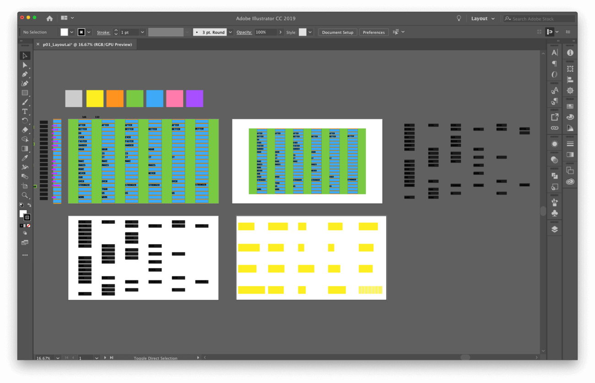

Project 1 - Styling Lyrics
The lyrics of the song 'Harder Better Faster Stronger' are very repeditive and moudlar. To represent this, the lyrics were broken down and placed a table in an alpahbetical order.
Lyrics broken down into a table
Calculating the ratio of each table cells
A quick mockup done in Illustrator

Project 2 - (De)Design
The main idea was to explore the background element; which has become mostly obsolete in modern web design. The background is the main content of this website. The idea was inspired by a class reading 'Vernacular Web 1'.
sadly there are no process images for this project.
Project 3 - A Record
The main objective was to utilize the screen like a series of posters. To visualize this, a full-screen scroll effect was used. To make the page more dynamic parallax effect was implicated
First ideation - a timeline wiki
Second ideation - a visual retrospect, wireframe in Adobe XD
Final design mockup done in Adobe XD.
Project 4 - Compilation
The main objective was to make the site as basic as possible. The main objective was to make jumping pages as least as possile. Preview image on hover, live iframe modals were used.
Quick idea sketch done in a notebook
Wireframe done in XD
Chaotic todo list for final cleanup of all projects.